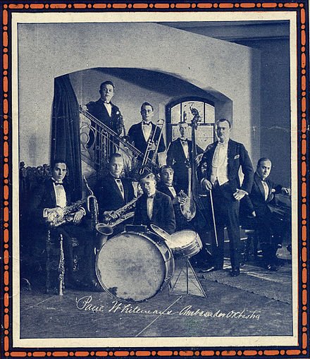

Instruments
Big bands generally consist of four sections: trumpets, trombones, saxophones, and a rhythm section of guitar, piano, double bass, and drums. The division in early big bands, from the 1920s to 1930s, was typically two or three trumpets, one or two trombones, three or four saxophones, and a rhythm section of four instruments. In the 1940s, Stan Kenton's band used up to five trumpets, five trombones, five saxophones, and a rhythm section. Duke Ellington at one time used six trumpets. While most big bands dropped the jazz clarinet from their arrangements, many of Duke Ellington's songs had clarinet parts. Boyd Raeburn added instruments like the flute, French horn, strings, and timpani to his band.
Arrangements
Big band arrangements from the swing era were written in strophic form with the same phrase and chord structure repeated several times. Each iteration, or chorus, commonly follows twelve bar blues form or thirty-two-bar (AABA) song form. The first chorus of an arrangement introduces the melody and is followed by choruses of development. This development may include improvised solos, written solo sections, and "shout choruses". An arrangement's first chorus might be preceded by an introduction, and many arrangements contain an interlude between choruses.
History
Before 1910, social dance in America was dominated by steps such as the waltz and polka. As jazz migrated from New Orleans to Chicago and NYC, energetic dances traveled with it. Big bands started to appear in movies in the 1930s through the 1960s. The bands led by Helen Lewis, Ben Bernie, and Roger Wolfe Kahn's band were filmed in the 1920s.
Modern Big Bands
Although big bands are identified with the swing era, they continued to exist after those decades. Bandleader Charlie Barnet's recording of "Cherokee" in 1942 has been called the beginning of the bop era. In the 1960s and 1970s, big band rock became popular. Other bandleaders used Brazilian and Afro-Cuban music with big band instrumentation. Modern big bands can be found playing all styles of jazz music.
Radio
During the 1930s, Earl Hines and his band broadcast from the Grand Terrace in Chicago. In Kansas City and across the Southwest, a bluesier style was developed by bandleaders like Bennie Moten and Jay McShann. Big band remotes on radio networks spread the music across the country during the 1930s and 1940s.
Movies
Big Bands began to appear in movies in the 1930s through the 1960s. Fictionalized biographical films of Glenn Miller, Gene Krupa, and Benny Goodman were made in the 1950s. The bands led by Helen Lewis, Ben Bernie, and Roger Wolfe Kahn's band were filmed by Lee de Forest in his Phonofilm sound-on-film process in 1925.